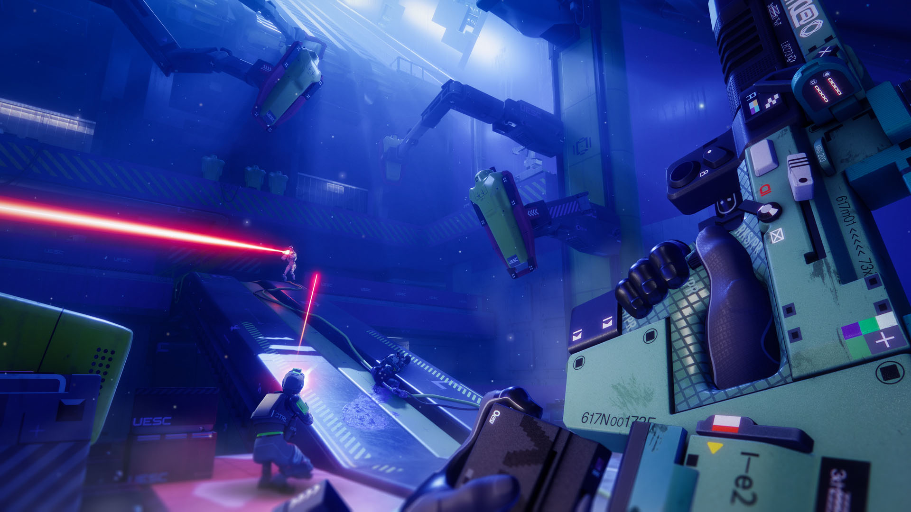

ARG

Bungie has run two ARGs. Before launch, fans dug through "leaked" documents from the "Goliath" project. The main ARG ran in spring 2026, and its prize was the Cryo Archive. canon
How the hunt went
18 hidden terminals, six on each starting map and dressed in authentic '94 interfaces, had to be found and activated in the right order. Community-wide stages came next: poetry, maths, image processing. The sixth took eight mini-puzzles and a 19-page technical manual, and the finale was a shared job: the whole community had to bring down 500 million UESC units. canon
The push was led by Breachers of Tomorrow (breacher.net, 1,500+ members), and the press compared it to "I Love Bees" from the Halo 2 days. On March 20 the Cryo Archive opened to everyone. The one recruiting through those terminals all along was Durandal, now voiced by Ben Starr. canon
Cryo Archive after the ARG
Over the summer the zone became the test bed for the game's first experimental PvE mode. Vault Breaker (Update 1.1.5, July 21) is a chain of vaults for solos, duos and trios; its window was extended to August 18, and after Nightfall Refresh the mode returns October 20 - November 9. canon
The Cryo Archive has seven vaults, and Subject01 waits in the seventh. You can check that in the game itself. canon
The ARG is still running
The official site has hidden pages. Its 404 page answers with a riddle about Prometheus the thief, and the riddle retells a 1994 terminal. The planet's surface data sits on a separate site, tauceti.world, dressed up as a UESC recon portal. canon
Strauss is back
A villain from 1994 has come back too. Dr. Bernhard Strauss, the architect of rampancy who once drove Durandal mad on purpose, is in the lore again, and he brought his book "On AI" (first published in 2472). Strauss holds that large language models shuffle the data they have absorbed without understanding it. canon
For the pedants: UESC Marathon did carry eleven AIs, but the databases do not confirm a separate Strauss memo tying that number to a rampancy instruction. Sources: marathonwiki.com, tauceti.gg.